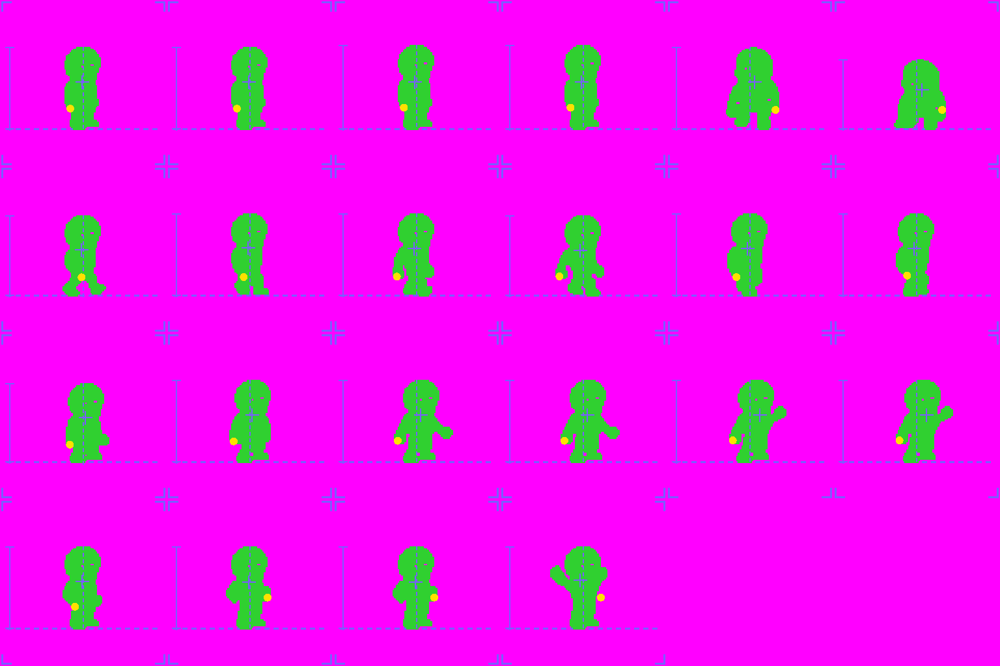
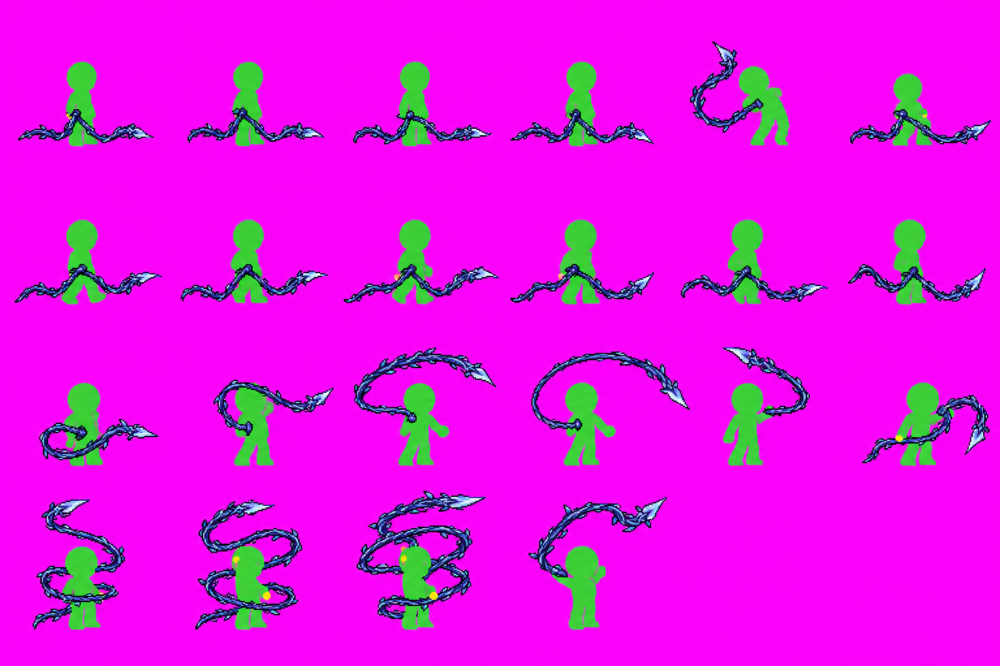
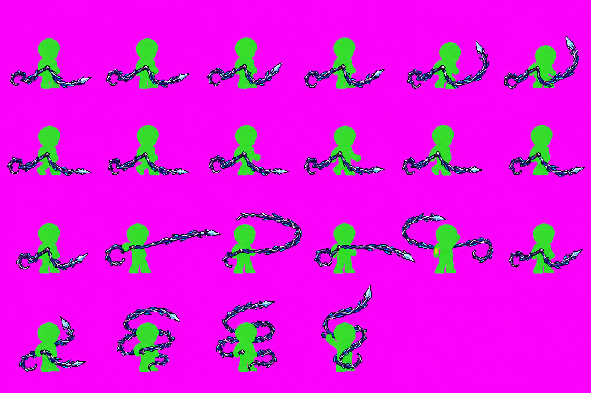
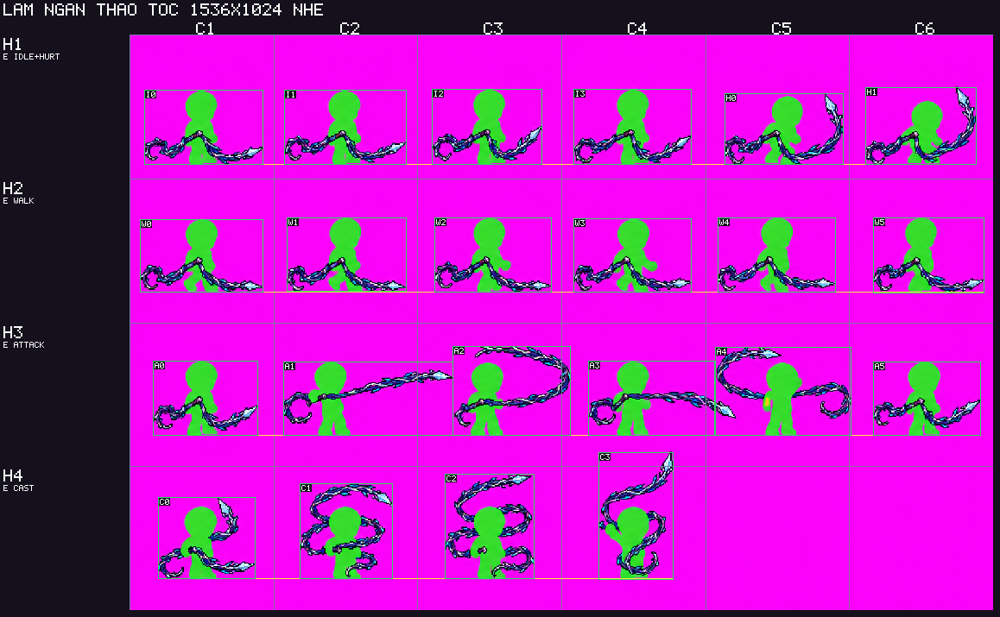
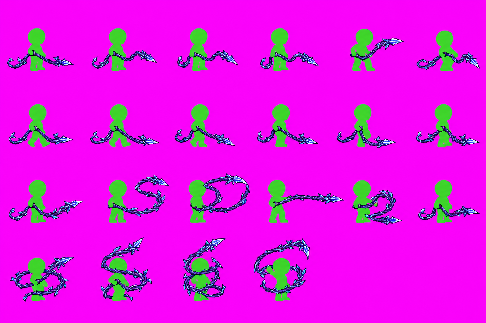
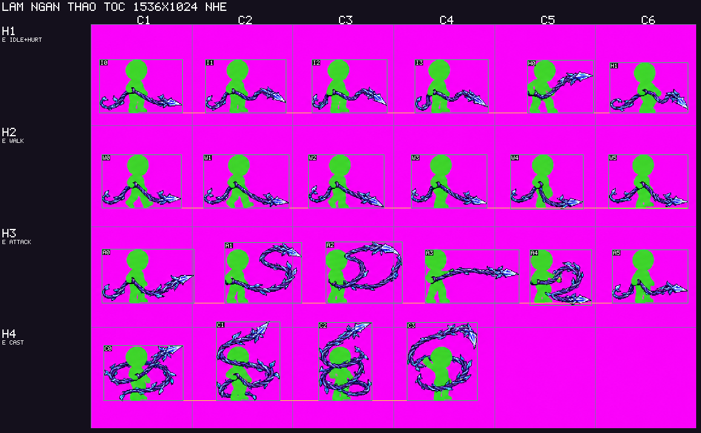
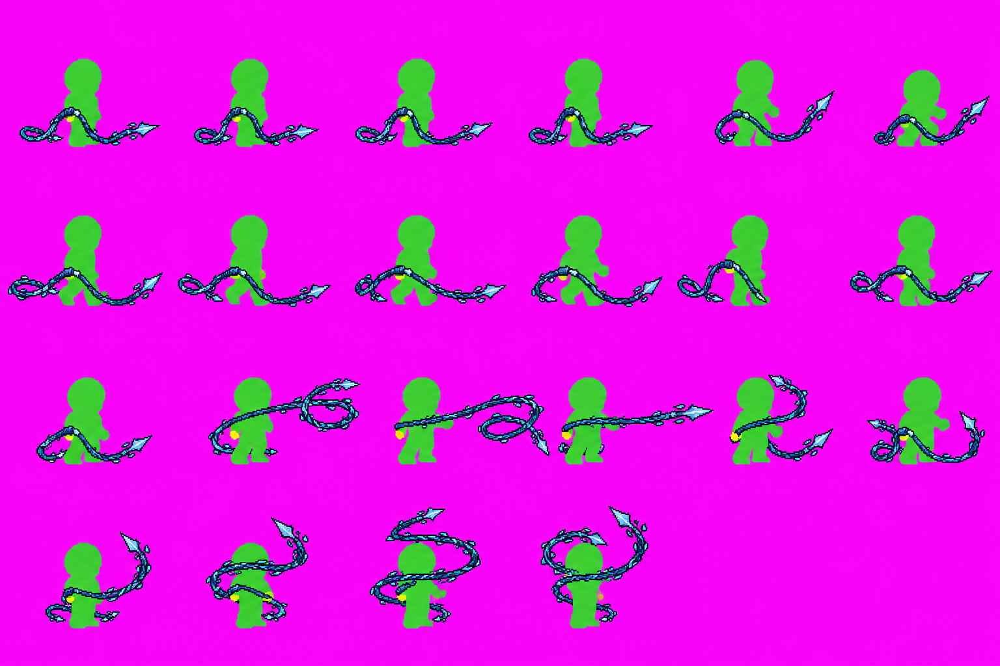
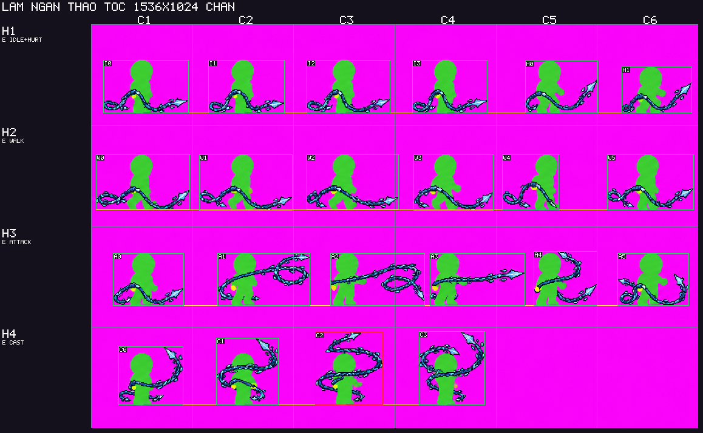

KHÔNG ĐẠT sau 3/3 lượt. Dừng sinh ảnh, không mở rộng hướng, không thay tờ C/sheet cũ. PR #1322 giữ nháp.
Chỉ kiểm ba lỗi: dây tay phụ, xén đầu dây, điểm cầm trôi. Tất cả RAW nguyên byte, từng job tuần tự; mỗi lượt dùng duy nhất bảng nộm C gốc. Lessons riêng @VUKHI-MEM được đưa qua tham số lessons của hàm sinh prompt; không sửa parser và không dùng cho vũ khí cứng.
← Trang duyệt vòng 1 · Nguồn và quyết định
| Lượt | Kiểm máy | Chặn / nhẹ | Soát ba lỗi |
|---|---|---|---|
| 1 | nhẹ | 0 / 17 | Chưa đạt cả ba; không chọn |
| 2 | nhẹ | 0 / 21 | Chưa đạt cả ba; không chọn |
| 3 | chặn | 1 / 18 | Chưa đạt cả ba; không chọn |
Tay thuận và đường chân cần giữ nguyên. Model vẫn thay thân và bỏ vạch dù đã nhấn mạnh nền cố định.


RAW · Prompt · Nguồn/hash · Kiểm chi tiết


RAW · Prompt · Nguồn/hash · Kiểm chi tiết


RAW · Prompt · Nguồn/hash · Kiểm chi tiết

